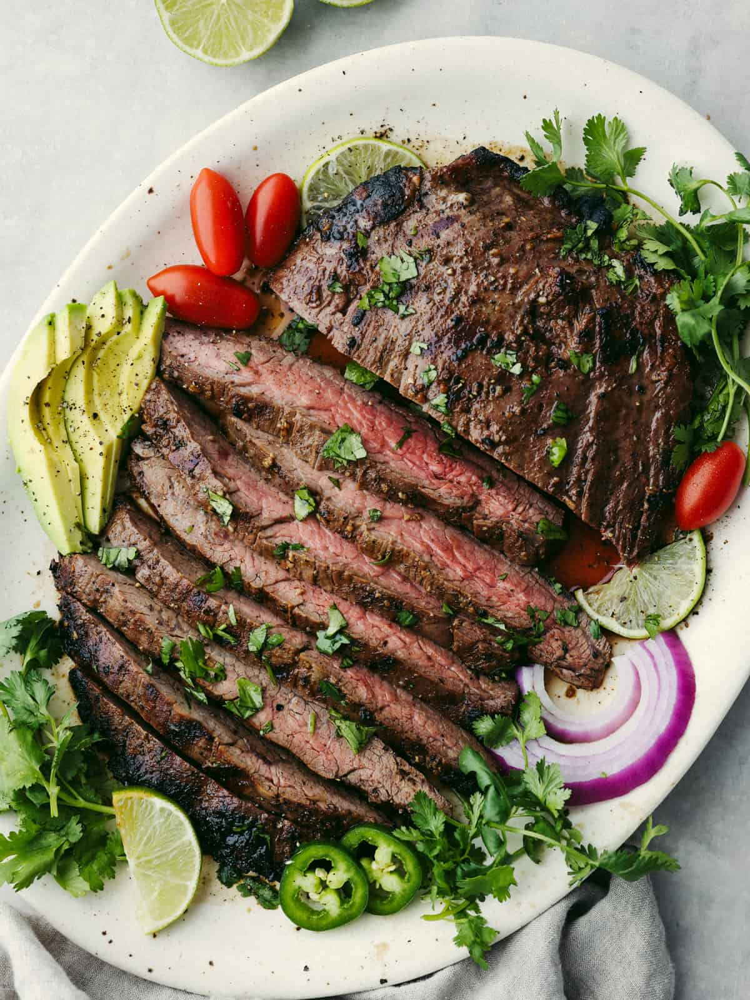

Carne Asada

Ingredients
- 2 pounds flank or skirt steak
- 1/4 cup soy sauce
- 2 tablespoons sugar
- 4 garlic cloves, minced
- chopped avocado
- Lime wedges
Steps
- Marinate the steak
- Preheat the grill
- Sear the steak
- Move the steak to the cool side of the grill
- Tent with foil and let rest
- Slice the steak across the grain